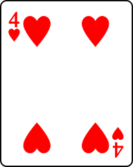
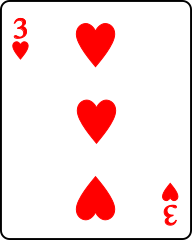
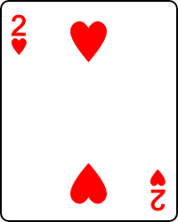

Designing, Defining, and Triggering CSS3 Animations without Custom Libraries (Thought Library)
01.- This example display several squares, those squares are using keyframes to create the animation, each time you reload the browser you could see how the animation works, furthermore each square is using the delay property with a define time so each square moves harmonically
.parentDiv{
/* This allows the div children to stay inside the div father
when they will use position absolute */
position: relative;
}
.squeare1{
width: 100px;
height: 100px;
background-color: orange;
/* This allows all the squares to stay in the same place */
position: absolute; left: 0; top: 0;
animation-name: example1; /* By this name keyframes will be called */
animation-duration: 3s; /* Time the animation will last */
/* allows to retain the last value used by the keyframes */
animation-fill-mode: forwards;
}
/* Allows the animation to move and change the current style*/
@keyframes example1{
0% {background-color:orange; left:0px; top:0px;}
100% {background-color:black; left:50px; top:50px;}}
...
02.- This example display several cards one over the other, each time you reload the browser you could see how the card is moving in his x-axis, all those cards saves the last value of the keyframe
.squeare8{
/* This allows all the squares to stay in the same place */
position: absolute; left: 0; top: 70px;
animation-name: example8; /* By this name keyframes will be called */
animation-duration: 4s; /* Time the animation will last */
/* Specify the Speed of the animation, in this case with a slow end */
animation-timing-function: ease-out;
/* allows to retain the last value used by the keyframes */
animation-fill-mode: forwards;
/* waits three secods before start */
animation-delay: 3s;
}
//this is the key, each card moves at a certain percent.
@keyframes example8{
0% {left:0px; top:0px;}
100% {left:30%; top:0px;}}
@keyframes example9 {
0% {left:0px; top:0px;}
100% {left:50%; top:0px;}}
@keyframes example10 {
0% {left:0px; top:0px;}
100% {left:70%; top:0px;}}




03.- In this example the ball rebound forever, when move the mouse over the ball it rotates in the Z-axis and rebounds in the Y-axis, further explanation on the comments over the code.
.ball{
/*Leaves the ball near the center*/
position: absolute;
left: 40%;
top: 0;
/* shorthand */
/* alternate: The animation is played forwards first, then backwards*/
/* ease-out: Specifies an animation with a slow end*/
animation: ballExample 1s alternate infinite ease-out ;
}
/* Moves the ball for the Y-axis*/
@keyframes ballExample {
0% {transform: translateY(50%);}
100% {transform: translateY(-50%);}
}
/* allows to rotate the image when the mouse is over the ball */
/* with a duration of 8 seconds. */
.rotateBall:hover{
transform: rotateZ(360deg);
transition: 8s;
}